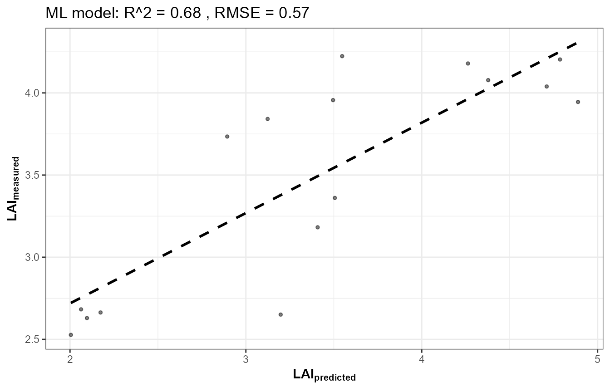
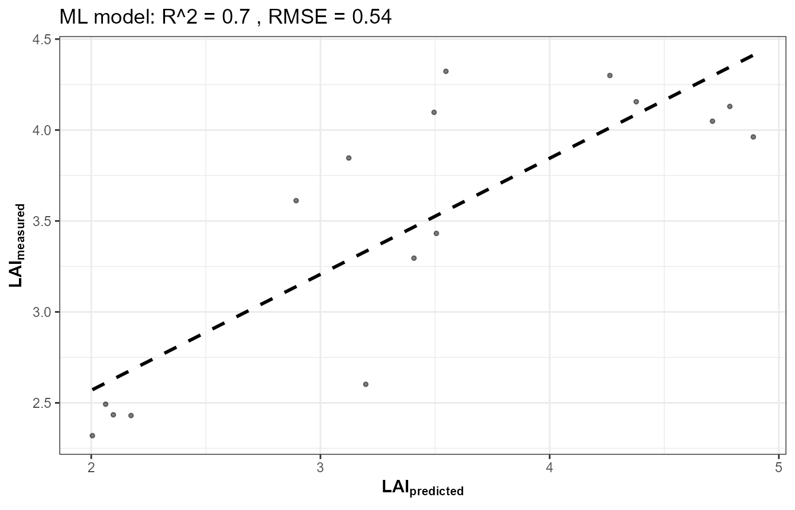
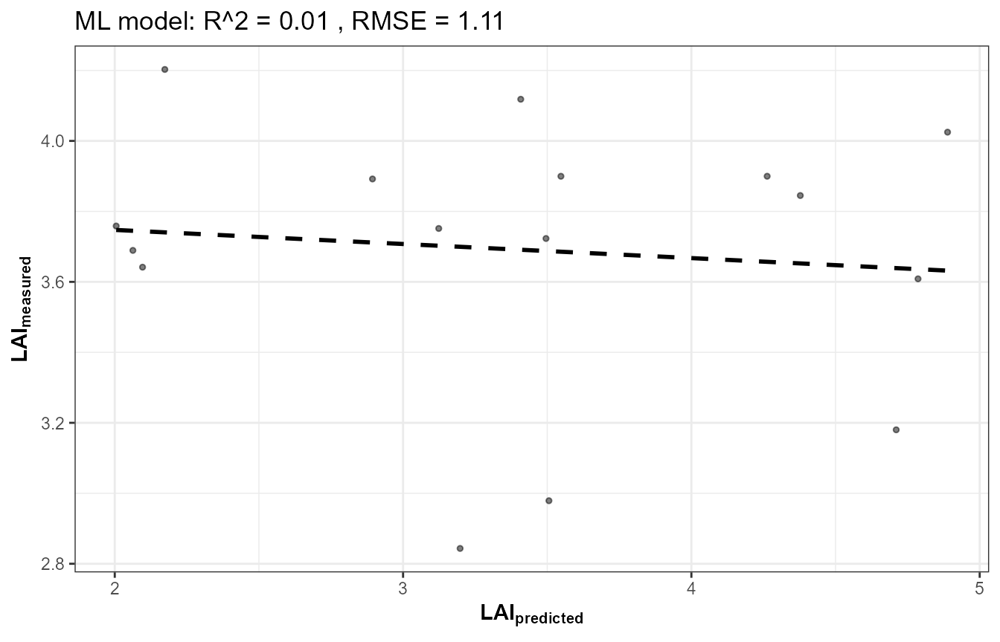

13. End-to-End RTM Inversion Pipeline
13-end-to-end-pipeline.RmdTutorials 05-12 built the pipeline one stage at a time: LUT, parallel
simulation, sensor convolution, indices, sensitivity, and three flavours
of inversion. This page runs the whole chain as one coherent
pipeline – the same shape as this package’s own course scripts
(Scripts/R/ForPROSAIL/, ForFoursail2/,
ForINFORM/, ForSPART/,
ForMARMIT/) – and, more importantly, shows how the
same pipeline looks across different canopy models with only a
couple of lines changed.
getLUT()
|
v
simulate_RTM() (fourSAIL / foursail2 / INFORM)
|
v
get.spectra.convolved() (Sentinel-2A / 2B / PRISMA)
|
v
getIndices() / getIndicesSE2()
|
v
get.inversion()
|
v
Vegetation traits1. One function, three canopy models
simulate_RTM() dispatches to
foursail()/foursail2()/inform()
based on canopy.model – canopy.model is a
single variable, not a separate script per model:
run_pipeline <- function(canopy.model, leaf.model = "PROSPECT-D", n.samples = 80, seed = 1) {
LUT <- as.data.frame(getLUT(inputs = ToolsRTM::inputsPROSAIL, nLUT = n.samples, setseed = seed))
LUT$Cs <- 0; LUT$fqe <- 0.01; LUT$Cx <- 0
LUT$cell.d <- 40; LUT$inter.c <- 0.045; LUT$baseline.abs <- 0.0006
LUT$leaf.thick <- 1.6; LUT$albino.abs <- 0; LUT$lign.cell <- 2; LUT$Nitrogen <- 1
LUT$fraction_brown <- 0.1; LUT$diss <- 0.5; LUT$Cv <- 1; LUT$Zeta <- 0
LUT$LAIu <- 0.5; LUT$sd <- 650; LUT$cd <- 4.5; LUT$h <- 20; LUT$skyl <- 0.1
rsoil <- rep(0.15, 2101)
refl <- t(sapply(seq_len(n.samples), function(i) {
suppressMessages(simulate_RTM(inputLUT = LUT[i, ], rsoil = rsoil,
leaf.model = leaf.model, canopy.model = canopy.model))$rsot
}))
colnames(refl) <- paste0("R.", 400:2500)
refl_X <- as.data.frame(refl); colnames(refl_X) <- paste0("X", 400:2500); refl_X <- cbind(id = seq_len(n.samples), refl_X)
se2a <- suppressMessages(get.spectra.convolved(rfl = refl_X, sensor = "Sentinel2a", plot.spectra = FALSE))
band_names <- paste0("B", seq_along(as.numeric(names(se2a)[-1])))
names(se2a) <- c("id", band_names)
train_idx <- sample(seq_len(n.samples), size = round(0.7 * n.samples))
train_df <- cbind(LUT[train_idx, ], se2a[train_idx, band_names])
test_df <- cbind(LUT[-train_idx, ], se2a[-train_idx, band_names])
fit <- get.inversion(data = train_df, depVar = "LAI", inputs = band_names,
algorithm = "RF", n.samples = nrow(train_df), seed = 42)
pred <- as.numeric(predict(fit$model, newdata = test_df[, c("LAI", band_names)]))
r2 <- 1 - sum((test_df$LAI - pred)^2) / sum((test_df$LAI - mean(test_df$LAI))^2)
list(LUT = LUT, refl = refl, obs = test_df$LAI, pred = pred, r2 = r2)
}2. Run it for fourSAIL, foursail2, and INFORM
set.seed(1)
res_foursail <- run_pipeline("fourSAIL")
set.seed(1)
res_foursail2 <- run_pipeline("foursail2")
set.seed(1)
res_inform <- run_pipeline("INFORM")
results <- data.frame(
canopy_model = c("fourSAIL", "foursail2", "INFORM"),
LAI_R2 = c(res_foursail$r2, res_foursail2$r2, res_inform$r2)
)
knitr::kable(results, digits = 3)| canopy_model | LAI_R2 |
|---|---|
| fourSAIL | 0.492 |
| foursail2 | 0.561 |
| INFORM | -0.149 |
A genuine finding, not a bug: INFORM’s LAI barely inverts
op <- par(mfrow = c(1, 2))
plot(res_foursail2$obs, res_foursail2$pred, pch = 19, col = "#009E73",
xlab = "Observed LAI", ylab = "Predicted LAI", main = paste("foursail2, R2 =", round(res_foursail2$r2, 2)))
abline(0, 1, lty = 2, col = "grey40")
plot(res_inform$obs, res_inform$pred, pch = 19, col = "#D55E00",
xlab = "Observed LAI", ylab = "Predicted LAI", main = paste("INFORM, R2 =", round(res_inform$r2, 2)))
abline(0, 1, lty = 2, col = "grey40")
par(op)This isn’t a bug – confirmed by checking LAI’s own
variance and its univariate correlation with reflectance in each case.
The reason: run_pipeline() above (matching
Scripts/R/ForINFORM/1-simulate_LUT.R) holds INFORM’s
crown-geometry parameters
(sd/cd/h/LAIu – stem
density, crown diameter, tree height, understory LAI)
constant across every sampled row, so
LAI’s own signal is weak relative to what actually
dominates forest reflectance variation in this LUT. Want better LAI
retrieval from INFORM? Vary those crown-geometry parameters too, not
just LAI itself – a direct, testable consequence of Tutorial 09’s
sensitivity framework applied to a real inversion result.
3. SPART: structurally different, same downstream pipeline
SPART() (Tutorial 03) already outputs at sensor bands
directly – there is no separate “simulate native, then convolve” step,
so its own version of this pipeline runs SPART() once per
LUT row instead of simulate_RTM() +
get.spectra.convolved(), then feeds the result into the
exact same get.inversion() call:
# ForSPART/1-simulate_LUT.R's version of this pipeline, conceptually:
sim_i <- SPART(inputLUT = LUT[i, ], CanopyModel = "fourSAIL", LeafModel = "PROSPECT-PRO",
sensor.i = ToolsRTM::Sentinel2A.MSI, rsoil = NULL, get.plots = FALSE)
toc_i <- sim_i$output$rfl.toc.BRDF # already at Sentinel-2A bands -- no convolution step needed4. MARMIT: the odd one out, on purpose
ForMARMIT in this package’s course scripts has no leaf
or canopy model at all – no
Cab/LAI/EWT to invert. Its target
trait is SMC (gravimetric soil moisture, via
get.marmit.rsoil()’s own physics), and it inverts almost
perfectly (R² typically 0.9+) since soil reflectance’s response to
moisture is close to deterministic physics, unlike the noisier proxy
relationship trait retrieval from canopy reflectance usually involves.
Not run here (see Tutorial 03’s soil-contribution section and the
marmit-soil-in-canopy article for the underlying MARMIT
physics).